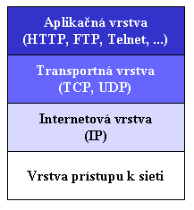
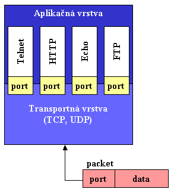
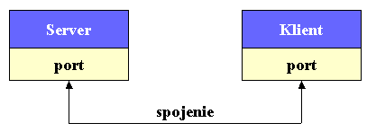
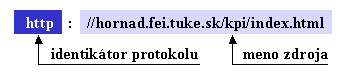
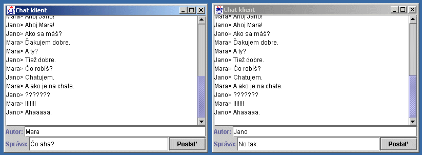

Cvièenie 13
| Cvièenie 1 | |
| Cvièenie 2 | |
| Cvièenie 3 | |
| Cvièenie 4 | |
| Cvièenie 5 | |
| Cvièenie 6 | |
| Cvièenie 7 | |
| Cvièenie 8 | |
| Cvièenie 9 | |
| Cvièenie 10 | |
| Cvièenie 11 | |
| Cvièenie 12 | |
| Cvièenie 13 |
Otázky
Kontakt
Download
Dokumentácia
Zadania
HyperNews
Poèítaèe vrámci Internetu komunikujú navzájom protokolom TCP (Transmission Control Protocol) alebo UDP (User Datagram Protocol). Nasledujúci obrázok znázoròuje vrstvy TCP/IP sie�ového modelu.

V prípade, �e vytvárame program komunikujúci po sieti, pracuje s aplikaènou vrstvou. Napriek tomu sú nutné aj znalosti ni�ších vrstiev (hlavne transportnej) preto�e poskytujú slu�by vrstvám vyšším.TCP (Transmission Control Protocol)
TCP je spojovo-orientovanı protokol, ktorı zabezpeèuje tok informácií medzi koncovımi stanicami (poèítaèmi). Zároveò je overovaná úspešnos� doruèenia informácie cie¾ovej stanici. Taktie� je garantované poradie príjmania dát (Skôr poslané dáta budú skôr doruèené).
UDP je protokol, ktorı slú�i na posielanie blokov dát (packetov) bez overenia úspešnosti doruèenia. Pri tomto
protokole nemusí plati�, �e skôr poslané dáta budú aj skôr doruèené ako dáta poslané neskôr. Tento protokol je z
dôvodov uvedenıch jednoduchší ako predchádzajúci protokol TCP a tım aj menej za�a�uje prenosové pásmo. Ak sa vám zdá
nepou�ite¾nı z dôvodu mo�nej nespo¾ahlivosti nie je to celkom tak. Existuje mnoho aplikácií (hlavne aplikácie reálneho èasu),
ktoré nie sú viazané len na obsah prenosu ale aj èas doruèenia. V prípade chyby prenosu nemá zmysel prenos opakova�, preto�e
údaj u� nemusí by� platnı. Takımto príkladom mô�e by� prenos informácie o èase.
V prípade po�iadavky spo¾ahlivého prenosu je nutné pou�i� protokol TCP, resp. zabezpeèi� si spo¾ahlivos� UDP
vlastnou kontrolou prenosu (Èo však ma� za následok zlo�itos� samotnej aplikácie a zvyšuje objem
prenášanıch dát.).
Poèítaè je vo väèšine prípadov pripojenı k poèítaèovej sieti jedinım rozhraním. Po tomto rozhraní putujú informácie, ktoré predstavujú sie�ovú komunikáciu. V tom istom èase však mô�e pracova� so sie�ou viacero aplikácií (napr. WWW server, FTP server, SMTP server). V tomto prípade je nutné urèi� adresáta (aplikáciu), ktorému patria dáta vrámci jednej koncovej stanice. Práve na toto odlíšenie existujú porty v protokoloch TCP a UDP.

V protokoloch UDP a TCP sa porty pou�ívajú na mapovanie prichádzajúcich dát na príslušnı be�iaci proces na cie¾ovej stanici.

Porty sú oèíslované od 0 do 65535 - 16 bitové èíslo. Porty od 0-1023 sú však pridelené štandardnım aplikáciám. Pre vlastnú potrebu sa pou�ívajú porty mimo tohto rozsahu. Pridelené porty je mo�né nájs� v RFC 1700 http://www.faqs.org/rfcs/rfc1700.html.
Nasledujúca tabu¾ka prezentuje nieko¾ko pridelenıch èísel portov:
| Port | Popis |
| 7 | Echo |
| 13 | Daytime |
| 20 | File Transfer [Default Data] |
| 21 | File Transfer [Control] |
| 23 | Telnet |
| 25 | Simple Mail Transfer |
| 80 | World Wide Web HTTP |
URL (Uniform Resource Locator)
URL predstavuje adresu zdroja (referenciu) na Internete.
URL pozostáva z dvoch základnıch èastí:
- identifikátoru protokolu
- mena zdroja

Meno zdroja mô�e pozostáva� (iba prvá èas� je nutná):- Meno hostite¾ského poèítaèa - meno hostite¾ského poèítaèa na ktorom je zdroj umiestnenı
- Meno súboru - cesta k súboru so zdrojom
- Èíslo portu - port cez, ktorı prebieha komunikácia
- Referencia - referencia na urèitú èas� vrámci zdroja (súboru)
Java poskytuje na tvorbu aplikácií komunikujúcich po sieti balík java.net.
Trieda URL popisuje URL. Na získanie èastí URL je mo�né pou�i� funkcie:
String getProtocol() String getHost() String getPath() String getPort() String getRef()Java zároveò ponúka jednoduchú mo�nos� získania špecifikované zdroja - t.j. umo�òuje èíta� priamo z URL. Pou�itím funkcie
openStream() priamo získame stream na dané URL. S tımto streamom je potom
mo�né pracova� ako so vstupnım streamom, viï Cvièenie 7.
Zdrojovı text príkladu URLReader.java.
import java.net.*;
import java.io.*;
public class URLReader {
public static final String resource="http://hornad.fei.tuke.sk/kpi/index.html";
public static void main(String[] args) throws Exception {
URL url = new URL(resource);
InputStream in=url.openStream();
int c;
while((c=in.read())!=-1){
System.out.print((char)c);
}
in.close();
}
}
Nasledujúci príklad prezentuje jednoduchú aplikáciu Echo. Po spustení EchoServer èaká
server na pripojenie klienta. Klient je implementovanı v súbore EchoClient.java.
Po pripojení klient posiela riadky textu na server a ten ich nezmenené posiela naspä� (echo).
Zdrojové texty: EchoClient.java, EchoServerOneClient.java
Vzh¾adom na to, �e server pracuje len ako jedno vlákno, nemô�e súèasne obsluhova� viacero klientov.
Vylepšením je server pre ¾ubovo¾nı poèet súèasne pripojite¾nıch klientov - implementácia pomocou vlákna pre
ka�dého pripojeného klienta EchoServer.java.
Záverom je prezentovaná aplikácia klient-server - triviálny chatovací program. Pozostáva zo serveru, na ktorı
sa pripájajú klienti.
Zdrojové texty: ChatClient.java, ChatServer.java

Zhrnutie
- Popíšte sie�ovı model TCP/IP?
- Charakterizujte protokol TCP?
- Charakterizujte protokol UDP?
- Na èo slú�ia porty?
- Èo je to URL?